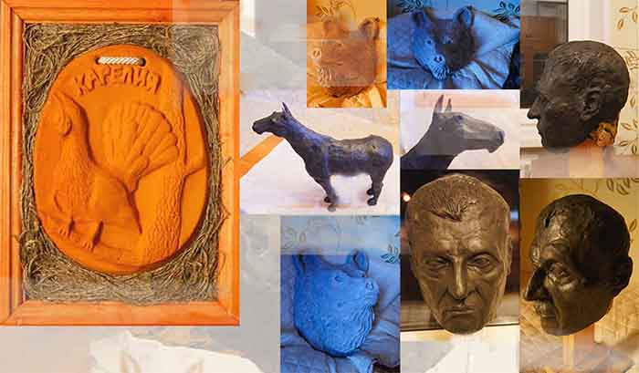

Мои работы.

Работа с глиной.
Глина как материал, который служит как в декоративных целях, так и в
строительном производстве имеет много нюансов по сравнению с другими материалами
поддающимися формовке. В этой заметке я хочу немного их осветить. Во-первых глина подвержена
появлению трещин при высушке. И это основное её негативное свойство. Во-вторых она
подвержена деформации и усадке при высушке и обжиге. Поэтому стараются не создавать
предметов декорации и скульптуру более 40*40*40 сантиметров в объёме. Крупные по
величине изделия больше мелкообъёмных подвержены появлению трещин и подлежат высушке
в пакетах из поэлитилена, а также их накрывают влажными тряпками, а через небольшое
отверстие идёт постепенное и очень медленное выпаривание влаги.
Благодаря этому даже сравнительно крупноформатные изделия могут оказаться целыми
и не деформированными. Глина считается пригодной к работе при густоте как у тёплого
пластилина, когда она не липнет к рукам, очищенная от камней и отбитая в брикеты. см 1 ст.
Обжиг изделий производится при их полной высушке,, от 6 и до 30 дней, и при очень
медленном и плавном наборе температуры..
700-1600 градусов в зависимости от поставленных задач.
Автор вышепредоставленных работ родился в Петрозаводске в 80 годы времён СССР,
учился на курсах для взрослых в художественной школе, а затем 3 года на курсах
абитуриентов у выпускников института имени Мухиной. Также были проведены многочисленные
наброски, эскизы и зарисовки, а также лепка портрета и копирования..
Я с радостью рассмотрю Ваши предложения по выполнению работ по живописи,
керамике и лепке.
------------------------------------------------------

-------------------------------------------------------------

>